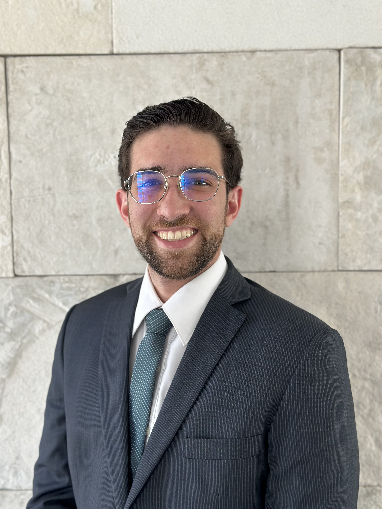
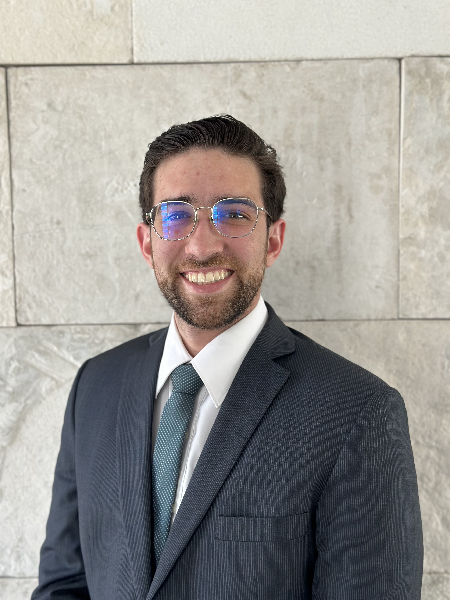

Hola, soy Alonso Castellnaos Vázquez
Desarrollador Full Stack en Java
de Cuernavaca, Morelos; México


de Cuernavaca, Morelos; México

¡Hola! Soy Alonso Castellnaos Vázquez, soy un ingeniero industrial, apasionado por el desarrollo de software. Actualmente aprendo Java y tecnologías full stack para construir aplicaciones robustas y escalables. Creo en el código limpio, las buenas prácticas y la resolución creativa de problemas.
[Cuernavaca, México]
[alonsocasva@gmail.com]
+52 777 304 0340
Estoy empezando
E.commerce | Alma de tortuga